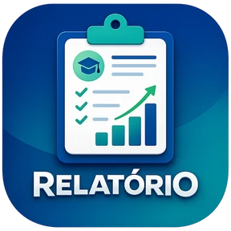

Relatório
relatorio.skinO diário digital do professor. Reúne relatos de aula, frequência, atividades, conduta e notas de cada turma num só lugar, com cálculos automáticos e histórico permanente.
Para quem
ProfessoresCoordenação
Objetivos
- Registrar cada aula com tema, presença e atividades em poucos minutos.
- Acompanhar a carga horária e fechar os bimestres pela soma real de aulas.
- Calcular notas de trabalho, prova e conduta com regras claras e iguais para todos.
- Guardar para sempre o histórico de cada ano letivo.
O que já faz
- Relatos organizados por IA a partir do rascunho do professor.
- Contador de h/aula, planejamento anual e projeção do calendário.
- Relatório individual anual do aluno, pronto para imprimir.
- Meu Diário: qualquer professor cria a conta e usa com os próprios dados.